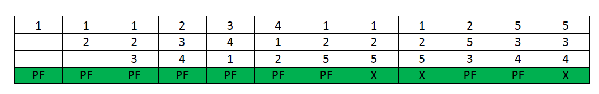
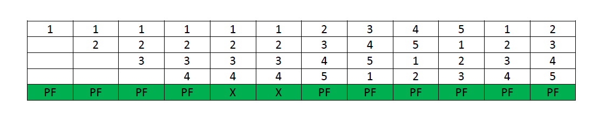

Page Replacement Algorithm Guide
The page replacement algorithm decides which memory page is to be replaced. The process of replacement is sometimes called swap out or write to disk. Page replacement is done when the requested page is not found in the main memory (page fault).
Page Fault - A page fault happens when a running program accesses a memory page that is mapped into the virtual address space, but not loaded in physical memory. Since actual physical memory is much smaller than virtual memory, page faults happen. In case of page fault, Operating System might have to replace one of the existing pages with the newly needed page. Different page replacement algorithms suggest different ways to decide which page to replace. The target for all algorithms is to reduce the number of page faults.
When a page fault occurs, the operating system has to choose a page to remove from memory to make room for the page that has to be brought in. The page replacement is done by swapping the required pages from backup storage to main memory and vice-versa. If the page to be removed has been modified while in memory, it must be rewritten to the disk to bring the disk copy up to date. If, however, the page has not been changed (e.g., it contains program text), the disk copy is already up to date, so no rewrite is needed. The page to be read in just overwrites the page being evicted. A page replacement algorithm is evaluated by running the particular algorithm on a string of memory references and compute the page faults.Referenced string is a sequence of pages being referenced. Page fault is not an error. Contrary to what their name might suggest, page faults are not errors and are common and necessary to increase the amount of memory available to programs in any operating system that utilizes virtual memory, including Microsoft Windows, Mac OS X, Linux and Unix.
Each operating system uses different page replacement algorithms. To select the particular algorithm,
the algorithm with lowest page fault rate is considered.
1.First-In, First-Out page replacement
2.Least recently used page replacement
3.Optimal page replacement algorithm
First In First Out
In operating systems that use paging for memory management, page replacement algorithm are needed to decide which page needed to be replaced when new page comes in. Whenever a new page is referred and not present in memory, page fault occurs
and Operating System replaces one of the existing pages with newly needed page. Different page replacement algorithms suggest different ways to decide which page to replace. The target for all algorithms is to reduce number of page faults.
First In First Out (FIFO) page replacement algorithm –
This is the simplest page replacement algorithm. In this algorithm, operating system keeps track of all pages in the memory in a queue, oldest page is in the front of the queue. When a page needs to be replaced page in the front of the queue is
selected for removal.
Example : Consider the following reference string: 0, 2, 1, 6, 4, 0, 1, 0, 3, 1, 2, 1.
Using FIFO page replacement algorithm –

Least Recently Used
In operating systems that use paging for memory management, page replacement algorithm are needed to decide which page needed to be replaced when new page comes in. Whenever a new page is referred and not present in memory, page fault occurs
and Operating System replaces one of the existing pages with newly needed page. Different page replacement algorithms suggest different ways to decide which page to replace. The target for all algorithms is to reduce number of page faults.
In Least Recently Used (LRU) algorithm is a Greedy algorithm where the page to be replaced is least recently used. The idea is based on locality of reference, the least recently used page is
not likely
Let say the page reference string 7 0 1 2 0 3 0 4 2 3 0 3 2 . Initially we have 4 page slots empty.
Initially all slots are empty, so when 7 0 1 2 are allocated to the empty slots —> 4 Page faults
0 is already their so —> 0 Page fault.
when 3 came it will take the place of 7 because it is least recently used —>1 Page fault
0 is already in memory so —> 0 Page fault.
4 will takes place of 1 —> 1 Page Fault.
Now for the further page reference string —> 0 Page fault because they are already available in the memory.
Example :

Optimal Page Replacement
In operating systems, whenever a new page is referred and not present in memory, page fault occurs and Operating System replaces one of the existing pages with newly needed page. Different page replacement algorithms suggest different ways to
decide which page to replace. The target for all algorithms is to reduce number of page faults.
In this algorithm, OS replaces the page that will not be used for the longest period of time in future.
Examples :
Input : Number of frames, fn = 3
Reference String, pg[] = {7, 0, 1, 2,
0, 3, 0, 4, 2, 3, 0, 3, 2, 1,
2, 0, 1, 7, 0, 1};
Output : No. of hits = 11
No. of misses = 9
Input : Number of frames, fn = 4
Reference String, pg[] = {7, 0, 1, 2,
0, 3, 0, 4, 2, 3, 0, 3, 2};
Output : No. of hits = 7
No. of misses = 6
The idea is simple, for every reference we do following :
1. If referred page is already present, increment hit count.
2. If not present, find if a page that is never referenced in future. If such a page exists, replace this page with new page. If no such page exists, find a page that is referenced farthest in future. Replace this page with new page.
Belady's Phenomenon
In Operating System, process data is loaded in fixed sized chunks and each chunk is referred to as a page. The processor loads these pages in the fixed sized chunks of memory called frames. Typically the size of each page is always equal to
the frame size.
A page fault occurs when a page is not found in the memory, and needs to be loaded from the disk. If a page fault occurs and all memory frames have been already allocated, then replacement of a page in memory is required on the request of a new
page. This is referred to as demand-paging. The choice of which page to replace is specified by a page replacement algorithms. The commonly used page replacement algorithms are FIFO, LRU, optimal page replacement algorithms etc.
Generally, on increasing the number of frames to a process’ virtual memory, its execution becomes faster as less number of page faults occur. Sometimes the reverse happens, i.e. more number of page faults occur when more frames are allocated to
a process. This most unexpected result is termed as Belady’s Anomaly.
Bélády’s anomaly is the name given to the phenomenon where increasing the number of page frames results in an increase in the number of page faults for a given memory access pattern.
This phenomenon is commonly experienced in following page replacement algorithms:
1. First in first out (FIFO)
2. Second chance algorithm
3. Random page replacement algorithm
Reason of Belady’s Anomaly –
The other two commonly used page replacement algorithms are Optimal and LRU, but Belady’s Anamoly can never occur in these algorithms for any reference string as they belong to a class of stack based page replacement algorithms.
Belady’s Anomaly in FIFO –
Assuming a system that has no pages loaded in the memory and uses the FIFO Page replacement algorithm. Consider the following reference string:
1, 2, 3, 4, 1, 2, 5, 1, 2, 3, 4, 5
Case-1: If the system has 3 frames, the given reference string on using FIFO page replacement algorithm yields a total of 9 page faults. The diagram below illustrates the pattern of the page faults occurring in the
example.

Case-2: If the system has 4 frames, the given reference string on using FIFO page replacement algorithm yields a total of 10 page faults. The diagram below illustrates the pattern of the page faults occurring in the example.

It can be seen from the above example that on increasing the number of frames while using the FIFO page replacement algorithm, the number of page faults increased from 9 to 10.
Note- It is not necessary that every string reference pattern cause Belady anomaly in FIFO but there are certain kind of string references that worsen the FIFO performance on increasing the number of frames.